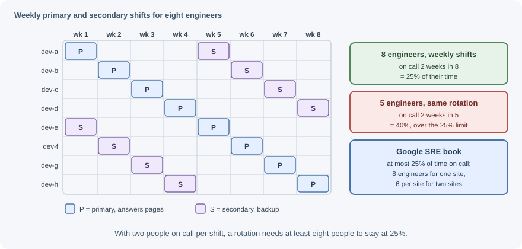

Team Practices and Ownership¶
The culture behind DevOps lives in a handful of team habits: who owns a service, how on-call is shared, how failures are discussed, how repetitive work gets removed, how knowledge and decisions are written down, how changes are approved, and how work is integrated. None of these needs a new tool. Each needs an explicit agreement and someone who keeps it alive.
This lesson covers "you build it, you run it" and what owning a service really includes, on-call rotations that people can sustain, blameless culture, toil reduction as a routine, documentation and runbooks, architecture decision records, change approval without a heavyweight change advisory board, and trunk-based habits. The examples show how TaskFlow's tasks team encodes these habits in its repository.
Why it matters¶
Tools copy easily; habits do not. Two teams can run the same pipeline and dashboards with opposite results: one deploys daily and learns from every incident, the other deploys monthly and hides its mistakes. The difference is how the people work together. DORA's research ties these habits to outcomes: generative, high-trust culture predicts software delivery and organizational performance; documentation quality amplifies the benefit of every technical practice studied; and external change approval slows delivery without making it safer.
Ownership also has a cost. Developers who run their services lose sleep when alerts are noisy, rotations are too small, or nobody budgets time for operational work. The practices in this lesson are what make ownership sustainable instead of a fast route to burnout.
Real-world usage¶
- Amazon, 2006. In A Conversation with Werner Vogels (ACM Queue, Volume 4, issue 4), Amazon's CTO described teams that are "completely responsible for the service": "Giving developers operational responsibilities has greatly enhanced the quality of the services ... You build it, you run it." AWS's Prescriptive Guidance still cites the interview as the source of the phrase.
- Netflix, 2018. The post Full Cycle Developers at Netflix explains "operate what you build": the team that develops a system is also responsible for operating and supporting it, supported by centralized teams that build shared tools, and staffed "with enough headroom" for operations. Without that, the authors warn, "teams risk overload and burnout."
- Google SRE on-call. The SRE book chapter Being On-Call caps on-call at 25% of an SRE's time, derives a minimum of eight engineers for a single-site 24/7 rotation (six per site for two sites), and offers time off in lieu or cash compensation, capped to limit any one person's load.
- DORA on change approval. DORA's streamlining change approval capability, based on the 2019 State of DevOps Report, found that approval by external bodies such as a change advisory board (CAB) has a negative impact on software delivery performance, and that "no evidence was found to support the hypothesis that a more formal, external review process was associated with lower change fail rates."
- Architecture decision records. Michael Nygard's 2011 post Documenting Architecture Decisions introduced short, numbered records with a title, context, decision, status, and consequences, kept in the repository.
Popular tools and providers: PagerDuty and incident.io for rotations
and paging; GitHub CODEOWNERS, rulesets, and deployment environments for
ownership and approvals; Markdown in the repository with MkDocs or
Backstage TechDocs for documentation; and adr-tools or a plain docs/adr/
folder for decision records.
How it works¶
You build it, you run it¶
Vogels described the old model precisely: "you take your software to the wall that separates development and operations, and throw it over and then forget about it. Not at Amazon. You build it, you run it. This brings developers into contact with the day-to-day operation of their software." The point is the feedback loop. A team that is paged for its own bugs fixes the causes; a team that is never paged keeps producing them.
The model has prerequisites, and Netflix's post lists them candidly: tooling that makes deploying, monitoring, and rolling back easy, training for developers who have never operated software, partnerships with central teams, and enough people that someone can take operational work without the team's roadmap collapsing. Team Topologies describes the same arrangement as stream-aligned teams supported by platform and enabling teams (see DevOps, SRE, and platform engineering).
What owning a service includes¶
![Diagram: the TaskFlow API in the center, owned end to end by the tasks team, with eight responsibilities around it: code and reviews with CODEOWNERS and small pull requests; pipeline and deploys with one path to production; SLOs and dashboards showing what users experience; alerts and on-call through the team's own rotation; runbooks and docs kept next to the code; decisions recorded as ADRs explaining why it is built this way; dependencies with contracts and failure modes; and cost and capacity with budgets and load tests.](../service-ownership-map.svg)
Ownership is a list of things someone must answer for, not a name in a wiki. A useful test: if this service failed at 3 a.m., is it obvious who is paged, what they look at first, how they roll back, and who decided the design they are debugging?
| Area | The owning team provides | Kept where |
|---|---|---|
| Code and reviews | Reviewers for every change; CODEOWNERS for paths that need specialist review | .github/CODEOWNERS |
| Delivery | One automated path to production, including rollback | .github/workflows/ |
| Reliability | SLOs, dashboards, and burn-rate alerts | docs/slo/, alert rules in the repository |
| On-call | A rotation, escalation policy, and handoff notes | Paging tool, linked from the README |
| Knowledge | README, runbooks, ADRs | docs/ in the repository |
| Dependencies | Known consumers and providers, contracts, behavior when a dependency fails | Service catalog, API specs |
| Cost and capacity | Budget alerts, load tests before big launches | Dashboards, docs/capacity.md |
On-call that people can sustain¶
The SRE book's numbers are a good default even outside Google. At most 25% of time on call; with a primary and a secondary on every weekly shift, that needs at least eight people in a single-site rotation. It also targets at most two incidents per 8 to 12-hour shift, so each one can be handled properly and followed by a postmortem, and treats "operational underload" as a risk too: engineers who are on call too rarely lose touch with production.

Fairness is more than equal shift counts. Track, per person and per quarter:
| Signal | Why it matters | Healthy direction |
|---|---|---|
| Pages per shift | Load on the responder | At most two incidents per shift |
| Pages outside working hours | Sleep and recovery | Falling over time |
| Share of pages handled by the busiest person | Hidden unfairness, often caused by one noisy alert | Close to an even share |
| Actionable rate | Alert quality | Most pages lead to action |
| Swaps and uncovered shifts | Whether the rotation still works for people | Rare, and easy to arrange |
Fair rotations also need compensation or time off after bad nights, a written swap and holiday policy, and handoffs between shifts. The mechanics of routing, escalation, and handoff notes are covered in alerting and on-call.
Blameless culture¶
When an engineer runs a command that deletes data, two responses are possible: find out who did it and punish them, or find out why the system made that action easy and its effects so large. The SRE Workbook states the second view as "Accidents Are Normal": accidents result "from missing safeguards for when things inevitably go wrong", and punishing the person "creates incentives to confuse issues, hide the truth, and blame others."
DORA's generative organizational culture capability builds on Ron Westrum's typology of how organizations handle information:
| Pathological | Bureaucratic | Generative | |
|---|---|---|---|
| Orientation | Power | Rules | Performance |
| Messengers (people who bring bad news) | Punished | Neglected | Trained |
| Failure leads to | Scapegoating | Justice | Inquiry |
| Novelty | Crushed | Leads to problems | Implemented |
DORA also cites a large two-year study at Google that found high performing teams need psychological safety, meaningful work, and clarity. In practice, blameless culture shows up as small, consistent habits:
- Postmortem timelines describe actions and the information available at the time, never "X failed to".
- Reviews ask "what made this action make sense?" and "what would have stopped it?", not "who?".
- Leaders thank people for reporting near misses and their own mistakes.
- Action items change systems: guardrails, defaults, tests, alerts.
- Accountability remains: owners complete the action items.
How to run the incident itself and write the postmortem is covered in incident response and postmortems.
Toil reduction as a routine¶
Toil, as defined in DevOps, SRE, and platform engineering, grows quietly unless a team budgets against it. Habits that work:
- Log it. Keep a running list of manual operational tasks with how often they occur and how long they take.
- Budget for it. Reserve a fixed share of each iteration (the TaskFlow team's working agreement uses 20%) for automation and reliability work, and protect it.
- Rank by payback. Hours to automate divided by hours saved per week.
- Prefer elimination to automation. A worker that gets stuck needs a fix, not a faster restart script.
- Close the loop. Review the toil log in retrospectives and celebrate removed work, not heroic effort.
Documentation and runbooks¶
DORA's documentation quality capability reports "a clear link between documentation quality and organizational performance", and found documentation quality driving the implementation of every technical practice it studied. In its 2022 data, for example, trunk-based development lifted organizational performance by 36% for teams with below-average documentation and by 1525% for teams with above-average documentation.
Docs that stay correct share a few properties:
- Kept next to the code (
docs/in the service repository) and changed in the same pull request as the behavior they describe. - Small and specific: a README that answers "what is this, who owns it, how do I run it locally, how is it deployed, where are the dashboards and runbooks"; separate runbooks per alert.
- Owned and reviewed: stale documentation is a bug, filed and fixed like any other.
- Written for the reader under pressure: runbooks start with what the alert means and the safest mitigation, then the diagnosis.
The structure of an alert runbook is described in alerting and on-call.
Architecture decision records¶
Nygard's argument is that a new team member who does not know why a decision was made can only "blindly accept" or "blindly change" it, and both are dangerous. An architecture decision record (ADR) captures one "architecturally significant" decision in a page or two:
| Section | Content |
|---|---|
| Title | A short noun phrase, numbered: "ADR 7: Send reminders from a queue worker" |
| Context | The forces at play, stated as facts, including the ones in tension |
| Decision | "We will ..." in full sentences |
| Status | Proposed, accepted, deprecated, or superseded (with a link to the replacement) |
| Consequences | All the results, positive, negative, and neutral |
ADRs are numbered sequentially and never reused; a reversed decision is kept and marked superseded, because knowing what was decided before is still useful. They live in the repository, so they are reviewed like code and travel with it. For architecture decision-making in general, see architecture fundamentals.
Change approval without a heavyweight CAB¶
Change control exists for good reasons: reduce the risk of changes and satisfy requirements such as segregation of duties ("changes must be approved by someone other than the author"). DORA's research found that the traditional way of meeting those goals, approval by a CAB or senior manager outside the team, has a negative impact on software delivery performance and no measurable benefit for change fail rate. It slows delivery, which leads to "the release of larger batches less frequently", which raises the risk of each release.
![Diagram: top lane, heavyweight external approval: a change is ready, waits about two days for the weekly CAB, the CAB reviews a batch of 40 changes, and they go out as one large release with higher risk per release; DORA found no evidence that external approval lowers change fail rates. Bottom lane, streamlined approval: a change is ready, gets peer review in the pull request within hours, passes automated checks for tests, scans, and policy, and goes out with a progressive rollout and automatic rollback; changes flagged as high risk, such as migrations, authentication, or infrastructure, detour through an extra reviewer on a protected environment; every change leaves an audit trail of reviewer, checks, deploy, and approver, and emergency changes use the same path.](../change-approval-paths.svg)
DORA's recommended alternative:
- Peer review for segregation of duties, with reviews and approvals recorded in the development platform.
- Automation to catch bad changes early: continuous testing, continuous integration, monitoring, and observability.
- Risk-based scrutiny instead of "treating all changes equally": detect and flag high-risk changes so they get additional review.
- One fast path for everything, so that "you can use it to make emergency changes too."
- A new role for the CAB: coordinating between teams, improving the process, and making business trade-offs, rather than reviewing code.
Jez Humble called the spreadsheet-and-meeting version of change control "risk management theatre". John Willis's 2010 post gives the opposite example, from a bank using ITIL: services that need no change approval are provisioned automatically in under five minutes, and only the rest wait for approval. The audit trail an auditor needs (who reviewed, which checks passed, who approved the production deployment) is a by-product of the pipeline. The automated security checks are covered in security in the delivery pipeline, and what auditors expect as evidence in compliance and audit readiness.
Trunk-based culture¶
Daily integration is a team habit before it is a branching model. DORA's trunk-based development capability lists the conditions: three or fewer active branches, merging to trunk at least once a day, and no code freezes or integration phases. The habits that make it work are social: small pull requests, reviews that start within hours, a red main branch treated as everyone's top priority, and unfinished work merged behind flags. The strategies themselves are compared in branching strategies.
When to use and when not to use¶
| Practice | Use when | Adapt or avoid when |
|---|---|---|
| You build it, you run it | The team changes the service and can be given tools and time to operate it | The team cannot deploy or roll back itself yet; fix that first, with platform help |
| Team-owned on-call | The rotation has enough people (about eight for one site) or shares a rotation with a neighbor team | Two or three people would be on call every other week; merge rotations or cover business hours only |
| Blameless postmortems | Always, for incidents and near misses | Never "blameless" for deliberate malicious acts; those follow security and HR processes |
| ADRs | Decisions that affect structure, dependencies, interfaces, or quality attributes | Small, easily reversed choices; a code comment is enough |
| Peer review instead of CAB | Changes flow through an automated pipeline with an audit trail | Regulated contexts may still need a named approver: put that approval in the pipeline, not a meeting |
| Risk-based extra review | Paths with real blast radius: migrations, authentication, infrastructure | Everything; adding reviewers everywhere recreates the CAB |
Practical examples¶
Ownership and specialist review with CODEOWNERS¶
# .github/CODEOWNERS: the last matching pattern takes precedence
* @example/tasks-team
/migrations/ @example/data-reliability
/infra/ @example/platform-team
/src/auth/ @example/security-champions
/docs/adr/ @example/tasks-team @example/architecture-guild
With the branch rule "require review from code owners" enabled on
main, an ordinary pull request needs an approval from the tasks team,
while a change under migrations/ needs one from the data reliability
team instead.
The file can live in .github/, the repository root, or docs/, and
code owners are only requested when the file is on the pull request's
base branch.
Extra approval only for risky changes¶
# .github/workflows/deliver.yml (excerpt): extra approval only for risky paths
jobs:
classify:
runs-on: ubuntu-latest
outputs:
environment: ${{ steps.risk.outputs.environment }}
steps:
- uses: actions/checkout@v7
with:
fetch-depth: 2 # main uses squash merges: one commit per push
- id: risk
run: |
if git diff --name-only HEAD~1 HEAD | grep -Eq '^(migrations/|infra/|src/auth/)'; then
echo "environment=production-reviewed" >> "$GITHUB_OUTPUT"
else
echo "environment=production" >> "$GITHUB_OUTPUT"
fi
deploy:
needs: classify
runs-on: ubuntu-latest
environment: ${{ needs.classify.outputs.environment }}
steps:
- uses: actions/checkout@v7
- run: ./scripts/deploy.sh "$GITHUB_SHA"
Both environments deploy to the same production system; the difference
is that production-reviewed is configured with required reviewers, so
a risky change waits for one approval while ordinary changes flow
straight through. GitHub allows an expression with the needs context
in the environment name. Two cautions: required reviewers on
environments are only available for public repositories on the Free,
Pro, and Team plans, and deployment metrics must count both environment
names.
An on-call load report¶
Export the month's pages from the paging tool and look for hidden unfairness:
# pages.csv (excerpt): time in UTC, responder, alert, did it need action?
at,responder,alert,actionable
2026-10-19T02:05:00Z,dev-c,ReminderQueueLag,no
2026-10-19T03:40:00Z,dev-c,ReminderQueueLag,no
2026-10-20T22:50:00Z,dev-c,ReminderQueueLag,yes
2026-10-21T01:35:00Z,dev-c,TaskflowErrorBudgetBurnFast,yes
// scripts/oncall-report.js: on-call load per person, out-of-hours share, noisiest alerts
// Usage: node scripts/oncall-report.js pages.csv <team time zone>
import { readFile } from "node:fs/promises";
const [file, timeZone = "Europe/Berlin"] = process.argv.slice(2);
const local = new Intl.DateTimeFormat("en-GB", { timeZone, weekday: "short", hour: "numeric", hourCycle: "h23" });
const [, ...rows] = (await readFile(file, "utf8")).trim().split(/\r?\n/);
const pages = rows.map((line) => {
const [at, responder, alert, actionable] = line.split(",");
const parts = Object.fromEntries(local.formatToParts(new Date(at)).map((p) => [p.type, p.value]));
const hour = Number(parts.hour);
const weekend = parts.weekday === "Sat" || parts.weekday === "Sun";
return { responder, alert, actionable: actionable === "yes", outOfHours: weekend || hour < 9 || hour >= 18 };
});
const pct = (n, d) => `${Math.round((100 * n) / d)}%`;
const count = (list, pred) => list.filter(pred).length;
const group = (key) => Map.groupBy(pages, (p) => p[key]);
console.log(`pages: ${pages.length}, out of hours: ${count(pages, (p) => p.outOfHours)} (${pct(count(pages, (p) => p.outOfHours), pages.length)}), actionable: ${pct(count(pages, (p) => p.actionable), pages.length)}`);
console.log("responder pages out-of-hours actionable");
const people = [...group("responder")].sort((a, b) => b[1].length - a[1].length);
for (const [who, list] of people) {
console.log(`${who.padEnd(9)} ${String(list.length).padStart(5)} ${String(count(list, (p) => p.outOfHours)).padStart(12)} ${pct(count(list, (p) => p.actionable), list.length).padStart(10)}`);
}
const [busiest, busiestPages] = people[0];
console.log(`busiest: ${busiest} handled ${pct(busiestPages.length, pages.length)} of pages (even share: ${pct(1, people.length)})`);
const [noisy, noisyPages] = [...group("alert")].sort((a, b) => count(b[1], (p) => !p.actionable) - count(a[1], (p) => !p.actionable))[0];
console.log(`noisiest alert: ${noisy} (${noisyPages.length} pages, ${count(noisyPages, (p) => p.actionable)} actionable)`);
Running it on six weeks of pages (18 rows) for a six-person rotation:
$ node scripts/oncall-report.js pages.csv Europe/Berlin
pages: 18, out of hours: 10 (56%), actionable: 67%
responder pages out-of-hours actionable
dev-c 7 6 43%
dev-a 3 1 67%
dev-b 3 1 67%
dev-d 2 1 100%
dev-f 2 1 100%
dev-e 1 0 100%
busiest: dev-c handled 39% of pages (even share: 17%)
noisiest alert: ReminderQueueLag (7 pages, 1 actionable)
The rotation looks fair on paper, one week each, but one person got 39%
of the pages, six of them at night, because one alert fired seven times
and needed action once. The fix is not a different schedule; it is
tuning or deleting that alert. Intl.DateTimeFormat with a timeZone
converts UTC timestamps to the team's local hour, including daylight
saving changes; Map.groupBy needs Node.js 21 or later.
An architecture decision record¶
# docs/adr/0007-send-reminders-from-a-queue-worker.md
# ADR 7: Send reminders from a queue worker
Status: Accepted (supersedes ADR 3). Date: 2026-11-02.
## Context
Reminders are sent by a timer inside each API process (ADR 3). With six API
replicas, duplicates appear unless we add locking, and a deploy that restarts
the API can skip reminders due during the restart. Reminder volume is growing
about 10% a month. The team already operates the job queue used for exports.
## Decision
We will enqueue a job when a reminder becomes due and send it from a separate
worker deployment that consumes the queue with at-least-once delivery. Sending
is idempotent: each job carries a reminder ID that is recorded once sent.
## Consequences
- API deploys no longer affect reminder delivery; the worker scales on queue depth.
- One more deployable to own: dashboards, alerts, and a runbook for queue lag.
- Duplicate sends are prevented by the idempotency record, not by locks.
- ADR 3 is marked superseded and links here.
The record answers the question a future developer will ask ("why is there a separate worker?") and names the costs the team accepted.
Best practices¶
- Give every service one owning team, recorded in the repository and the service catalog, with a rotation that the team staffs itself.
- Budget operational work explicitly: on-call time, toil reduction, and documentation are part of the plan, not leftovers.
- Size rotations so nobody is on call more than about a quarter of the time, compensate on-call, and watch per-person page load.
- Run blameless reviews for incidents and near misses; change systems, not people.
- Keep READMEs, runbooks, and ADRs in the repository and update them in the same pull requests as the code.
- Replace external approval boards with peer review, automated checks, progressive delivery, and an audit trail; add extra review only where risk is real.
- Use the same path for emergency changes as for normal ones, made fast enough that it works under pressure.
- Keep integration daily: small pull requests, fast reviews, a green main branch.
In production¶
- One person handles most of the pages. Detect: the on-call report shows one responder with three times the even share, mostly at night. Cause: a noisy alert that fired during their weeks, not an unfair schedule. Fix: tune or delete the alert, give the person recovery time, and review per-person load monthly.
- A three-person team is on call every third week and burning out. Detect: swaps, sick days after on-call weeks, and rising after-hours pages. Cause: a rotation far smaller than the roughly eight people needed for 25%. Fix: merge rotations with a neighboring team, limit paging to business hours for non-critical services, and invest in reducing pages.
- Postmortems got vague after a manager named an engineer. Detect: timelines with gaps and phrases like "a configuration issue occurred"; near misses stop being reported. Cause: blame broke psychological safety. Fix: leadership restates the blameless policy, reviews focus on system changes, and people are thanked for candor.
- Every change waits for the weekly approval board. Detect: lead time dominated by approval wait; releases bundle dozens of changes; change fail rate does not improve. Cause: external approval as the main control. Fix: move approval into pull request review and automated checks, add risk-based review for flagged paths, and give the board a strategic coordination role.
- Nobody knows why the reminder service is built the way it is. Detect: repeated debates and a proposal to "simplify" that would reintroduce an old bug. Cause: decisions were never recorded. Fix: write ADRs for current decisions, including retroactive ones, and make them part of design reviews.
- The runbook was wrong during an incident. Detect: responders deviate from the runbook, and the postmortem notes outdated commands. Cause: runbooks live in a wiki nobody updates with code changes. Fix: move runbooks into the repository, review them in pull requests, and test them in game days.
Important terminology¶
- You build it, you run it: The team that builds a service also operates and supports it.
- Service ownership: Answerability for a service's code, delivery, reliability, on-call, documentation, dependencies, and cost.
- On-call rotation: The schedule of who responds to pages, usually a primary and a secondary per shift.
- Operational underload: Being on call so rarely that skills and confidence fade.
- Blameless culture: Treating failures as information about the system rather than individual fault.
- Westrum typology: Pathological, bureaucratic, and generative cultures, distinguished by how information flows.
- Runbook: Step-by-step guidance for diagnosing and mitigating a specific alert or situation.
- Architecture decision record (ADR): A short, numbered document recording one significant decision, its context, and its consequences.
- Change advisory board (CAB): A group outside the team that approves changes.
- Segregation of duties: The requirement that changes are approved by someone other than their author.
- Code owners: People or teams who must review changes to specific paths.
Common mistakes and misconceptions¶
- Assigning on-call to developers without tools, runbooks, time, or compensation.
- Measuring rotation fairness by shift count instead of actual pages.
- Calling postmortems blameless while performance reviews cite incidents.
- Treating documentation as a one-time project rather than part of each change.
- Writing ADRs only for big decisions and never marking old ones superseded.
- Believing auditors require a change board; they require evidence of authorized, reviewed changes, which a pipeline can provide.
- Adding approvals after every incident, which grows batch size and makes the next incident more likely.
- Treating trunk-based development as a branching rule instead of a set of team habits.
Revision questions¶
- What did Werner Vogels mean by "you build it, you run it", and what prerequisites did Netflix name for making it work?
- List eight things an owning team is answerable for, and where each is recorded.
- A team of six runs a weekly rotation with a primary and a secondary. What share of weeks is each person on call, and how many people would bring it down to 25%? (2 of 6 weeks, about 33%; eight people.)
- Why does the SRE book worry about operational underload as well as overload?
- Compare pathological, bureaucratic, and generative cultures in how they treat messengers and failure.
- What are the five sections of a Nygard ADR, and why is a superseded ADR kept?
- What did DORA find about external change approval, and what does it recommend instead to meet segregation of duties?
- Design a risk-based approval rule for TaskFlow: which paths need extra review, who reviews them, and how does an emergency fix flow?
Further learning¶
- A Conversation with Werner Vogels (ACM Queue, 2006)
- Netflix: Full Cycle Developers at Netflix
- Google SRE book: Being On-Call
- DORA: Streamlining change approval
- DORA: Documentation quality
- Michael Nygard: Documenting Architecture Decisions
- GitHub Docs: About code owners
- Next: platform engineering and developer portals. Back to the DevOps fundamentals overview.